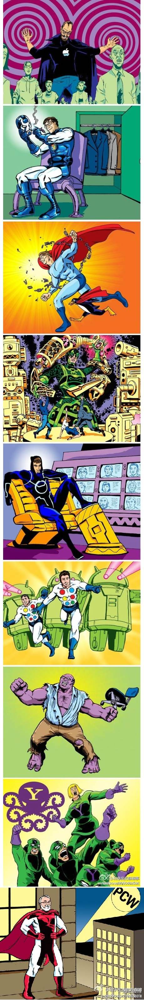
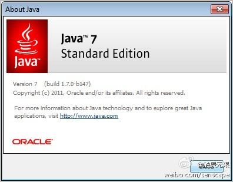

//@程序员的那些事:第4位：爱达·勒芙蕾丝（Ada Lovelace），英国诗人拜伦之女。她在翻译《分析机概论》时添加了许多注记，内容详细地说明用计算机进行伯努利数的运算方式，从而被认为是世界上第一位程序员。1980年12月10日，美国国防部制作了一个新的计算机编程语言，命名为Ada，以此纪念。@伯乐在线官方微博:PCWorld为8位科技巨星制作了漫画形象，看看这些熟知的巨星和你熟悉的漫画人物是不是有些类似呢？1.乔布斯；2；盖茨；3.Linus；4.Ada Lovelace首个程序员；5.扎克伯格；6.GG的两位创始人；7.鲍尔默-微软；8.巴茨-雅虎……网页链接 （最后是PCWorld的编辑部主任Steve Fox的漫画形象） 
首先, Java 7算不Java诞生以来最大的改进, 另外, Java 7里面没有闭包特性, 有可能在下一个版本里. 转发任何内容前, 尽量要核实一下. //@dreamleft: //@甲骨文Java社区：转发微博。@触景无限:Oracle今天已经放出Java 7正式版的二进制安装包，这不是小升级，而是Java诞生以来最大的改进，增加了闭包等很多有用的特性。最新版的Netbeans7已经支持Java7。 
3号航站楼照收, 照样是来去都是10元. 而大部分航班都在3号楼, 至少我知道实情时, 是有受骗的感觉.@侯兴国wilson:今天去北京机场1号航站楼，高速费降到5元了。回来（进京）不收费了！走的畅快！
也有人认为是最重要的是JDK1.2, 是Java能够流行的关键发布. 对Java语言来说, J2SE 5是改变最大的一个发布. //@赵晓锋:应该是J2SE 5.0(tiger)，当时我在j2se china team，tiger中有generic,annotation,autobox,for in,还有很多nio和concurrent提升。java6的script engine也算一个。当然，最具时代意义的@触景无限:Oracle今天已经放出Java 7正式版的二进制安装包，这不是小升级，而是Java诞生以来最大的改进，增加了闭包等很多有用的特性。最新版的Netbeans7已经支持Java7。